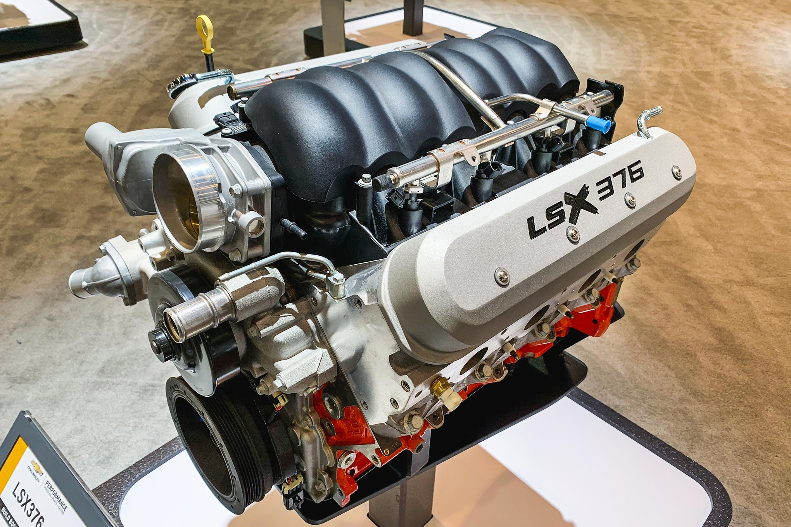
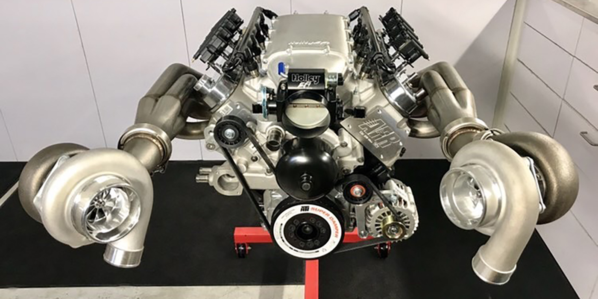
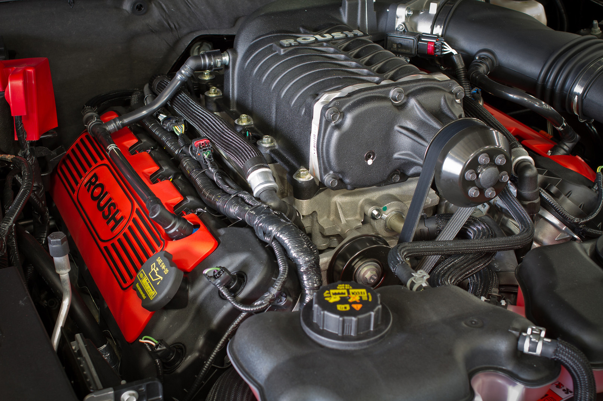

Shop for Parts & Engines

This is a Ls motor, this motors stock can run about 475-550 HP with a tune. These motors can mostly be found in SS Cameros, Corvettes or Sliverado SS.
Inventory Includes
- Ls3
- LsX
- Ls7

turbos are commonly used for 4cyclinder cars too help the small motor have paower but also fule efficent on gas at the same time. turbos can make really cool sounds when the turbo backfires , depending on the car, tune and turbo they can sometimes sound like gunshots.
Turbo Inventory
- 25mm
- 45mm
- 75mm

Super chargers are commonly found in higher end cars like GT500 Cobra or ZZl Camero and even in some Colbolt SS. They sound like a fighter jet getting ready for take off!